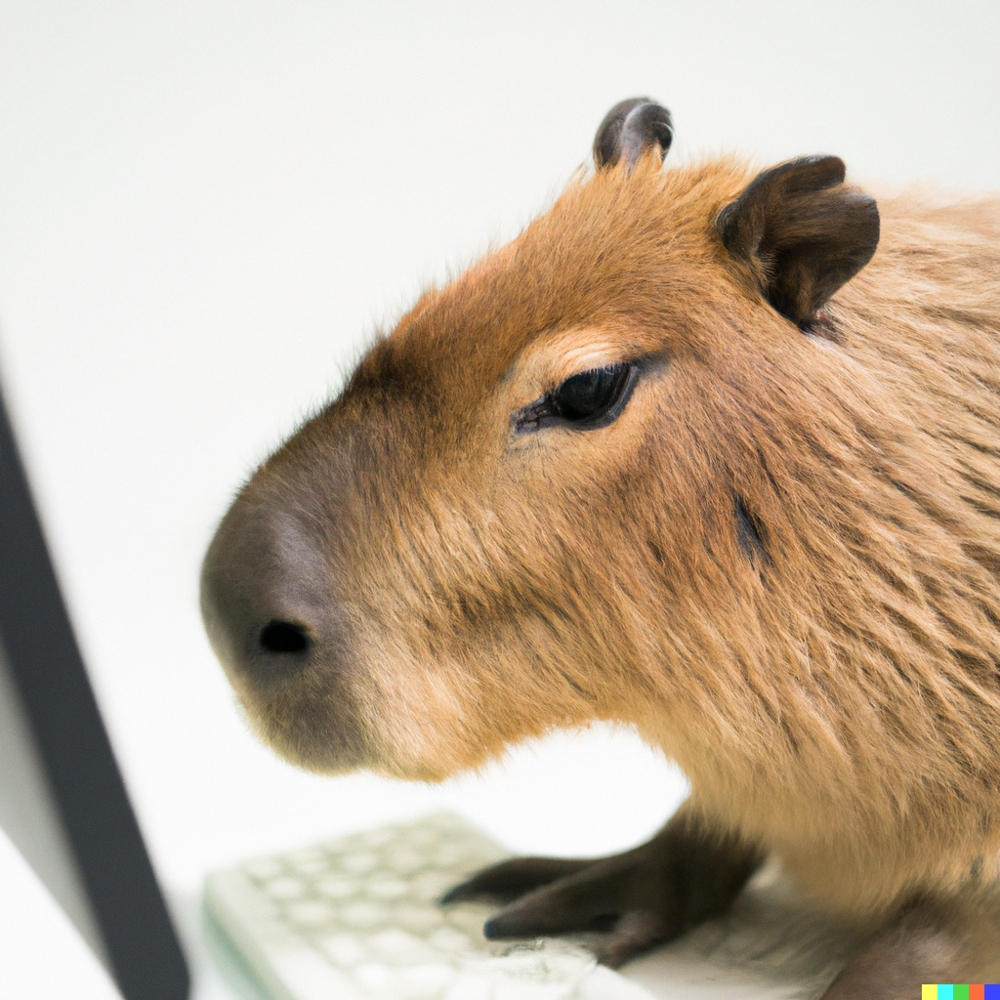
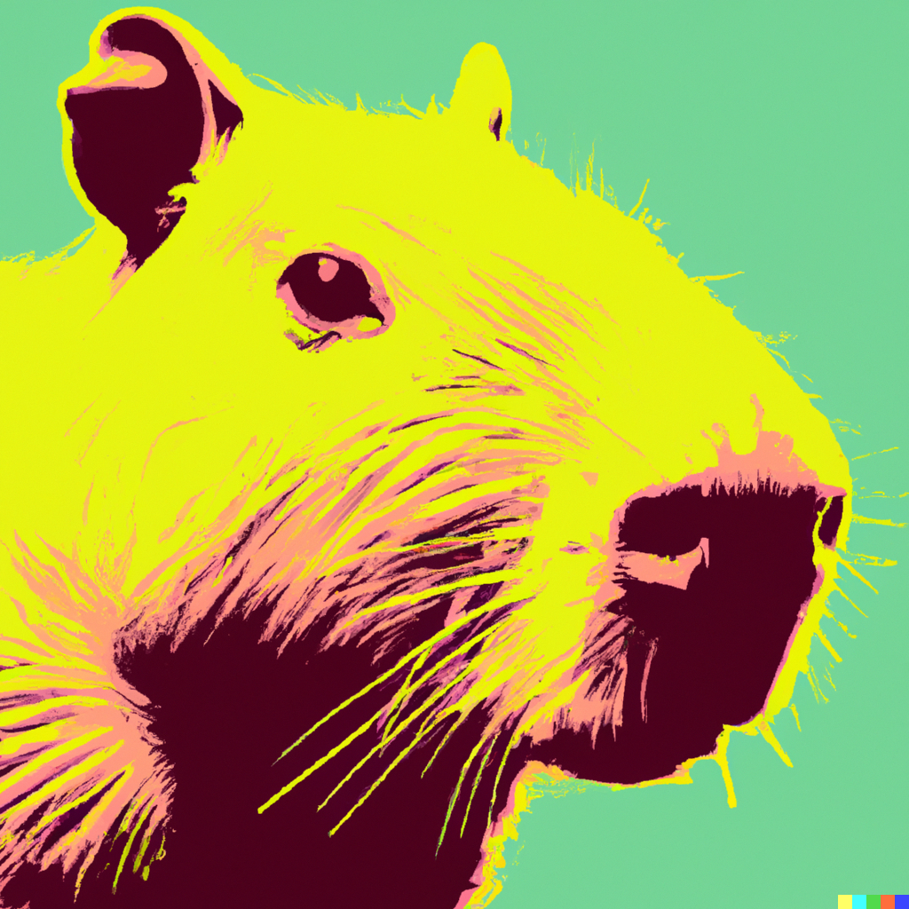
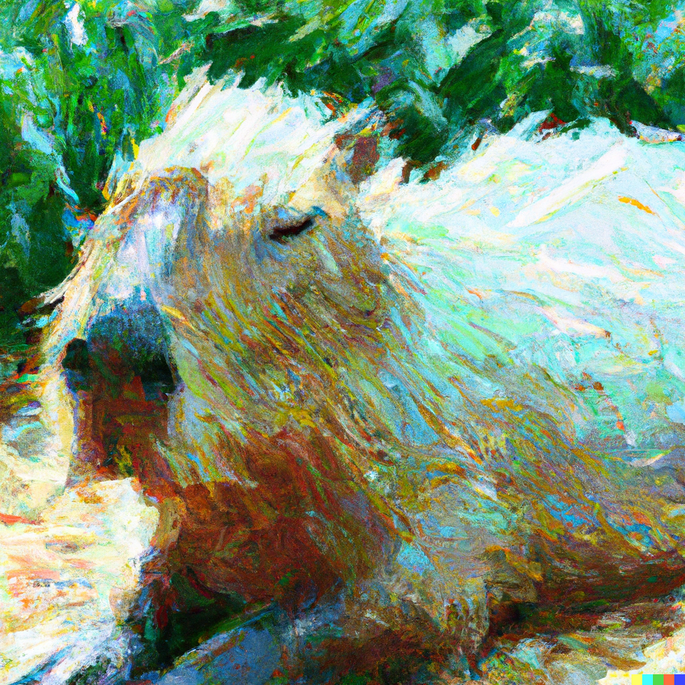
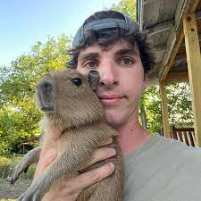
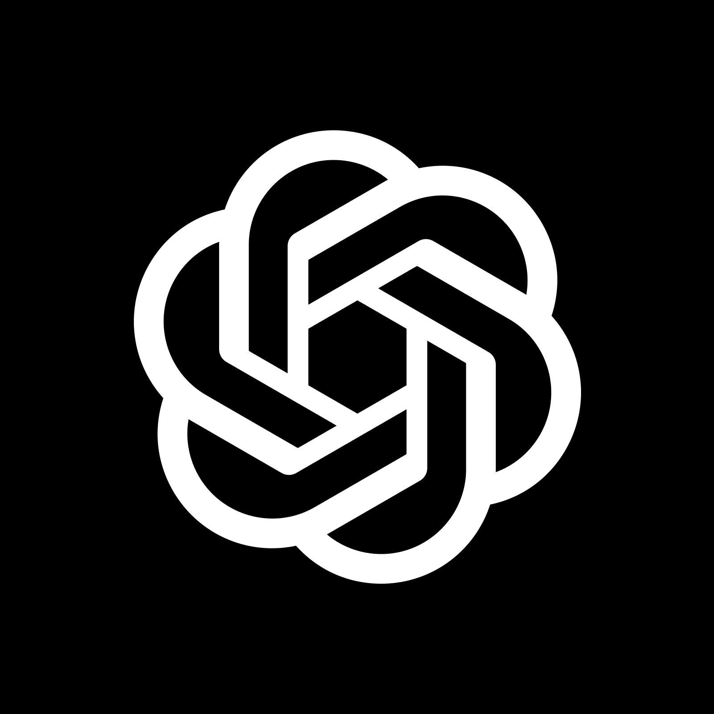

DALL-E 2 fremvisning
3D

“A capybara coding on a computer” by Tobias × DALL·E.
Dette er et bilde av et flodsvin som bruker en datamskin. Det ble generert av et program som heter DALL-E 2.
Pop-Art

“capybara, pop art” by Tobias × DALL·E.
Dette er et kunstverk av et flodsvin i Pop-Art stil. Det ble generert av et program som heter DALL-E 2.
Nyimpresjonisme

“A capybara, Neo-Impressionism painting” by Tobias × DALL·E.
Dette er et maleri av et flodsvin i Nyimpresjonistisk stil. Det ble generert av et program som heter DALL-E 2.
Special thanks to:
The Urban Rescue Ranch

"Et bilde av Ben Christie og et av hans flodsvin" Fotograf ukjent, trolig han selv
OpenAI

"Et bilde av logoen til OpenAI" Bedriften som lagde DALL-E 2